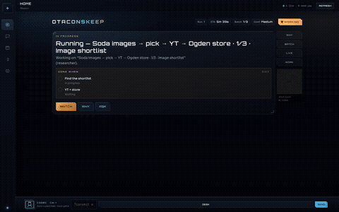

No cloud landlord
Prompts, screenshots, research MD, desk files, LAN by default. The brain is Ollama. Cloud LLM endpoints are refused.
OtaconsKeep · Multi-agent Command Deck
Why hand your computer to Meta Muse or Grok? Named AI teammates. One always-on computer. Real browser. Real jobs. A Why dossier that refuses to celebrate the wrong cart. Local, Grok & Muse-class computer-using AI on a workstation you own.
00 // Watch the Deck
Command Deck, LIVE handoffs, Done + Why. Full YouTube embed also lives under Videos.
Open on YouTube → · 30s GIF preview

01 // Why it exists
Meta Muse and Grok proved the genre: persistent teammates that drive a computer while you walk away. They also proved the tax: your work, browsing, and files on someone else’s machine, forever, behind a subscription, with an agent loop you can’t fully autopsy when it carts the wrong SKU. Keep Desk is the local answer: the same kind of computer-using teammate, running on hardware you actually own.
Prompts, screenshots, research MD, desk files, LAN by default. The brain is Ollama. Cloud LLM endpoints are refused.
Command Deck UI. LIVE browser. Codec bar. Batch pipelines. Why dossiers. Mission control, not another chat bubble farm.
Hollow / Incomplete / off-brief. A mission cannot silently celebrate the wrong cart. That alone is worth the build.
02 // Intel board
Authoritative scorer on the reference Keep, compliance_score.py · 2026-09-19.
03 // Comparison
Cloud wins on frontier models and zero-ops. Keep wins on sovereignty, cost ceiling, and an inspectable desk you actually own. Competitor names change; the local-vs-cloud tradeoff does not.
| Keep Desk | Typical cloud teammate | |
|---|---|---|
| Where the computer lives | Your box / LAN | Provider cloud |
| Brain | Your Ollama model | Provider frontier model |
| Cost | Hardware + power only | Subscription + often usage |
| Named persistent bots | Yes | Often yes |
| Browser computer-use | Yes | Often yes |
| Full desktop GUI agent | No (known FAIL) | Varies |
| Local-only LLM | Enforced | Usually no |
| Self-host | Yes · public repo | No |
| Frontier quality OOB | Your GPU model | Usually stronger out of the box |
04 // Install
Keep Desk is a public repository. No seat, no license key, no gate. Linux host recommended. GPU strongly recommended.
git clone https://github.com/Otaconskeep/keep-desk.git
cd keep-desk
cp .env.example .env
# Point at local Ollama (cloud LLM bases are refused)
# LOCAL_OLLAMA_URL=http://host.docker.internal:11434/v1
# LOCAL_MODEL=gpt-oss:20b
ollama pull gpt-oss:20b
docker compose up -d --build
# Command Deck → http://127.0.0.1:5765/
# Browser service → http://127.0.0.1:5766/workspace/research/<pipe_id>/Deep troubleshooting, Obsidian vault mounts, upgrades, uninstall, in the repo: Otaconskeep/keep-desk.
Discord, or open an issue on the repo.
05 // Honest limits
browser_navigate first (no web_research-only theater; hollow shortlists blocked). Bot walls / SPA choke can still need retries or human takeover.06 // FAQ
Yes. Running locally has no cloud LLM bill, and the repo, install instructions, and compose wiring are public, no seat, no license key.
No. Local Ollama only; cloud LLM endpoints are refused.
91.6% is an internal weighted claimable requirements score (critical gates PASS on Keep Desk’s own matrix). It is not a completion bar for OtaconsKeep overall, and not “91.6% as good as Grok.” Day-to-day feel is a separate estimate (~75% once you count model quality, mobile, and connectors).
Earlier builds nudged web_research first, so Amazon jobs never moved the browser. Fixed: shopping/homelab stages must browser_navigate before finish; empty shortlists are rejected.
Treat purchases as dangerous. Research is in scope; production spending needs human approval and external gates.
Antonio G. Garcia, Otaconskeep.
07 // Doctrine
You are the principal. Have fun. Break things on purpose. Keep production mutations on REX. Support is optional, never required.
08 // Videos
Keep Desk on YouTube, Command Deck, LIVE, handoffs, Done + Why.